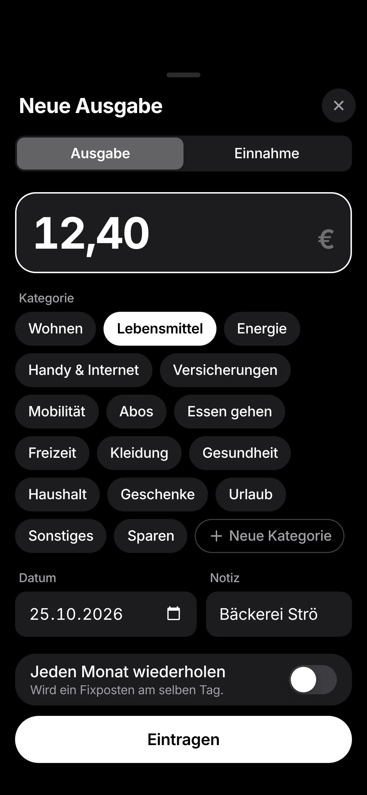
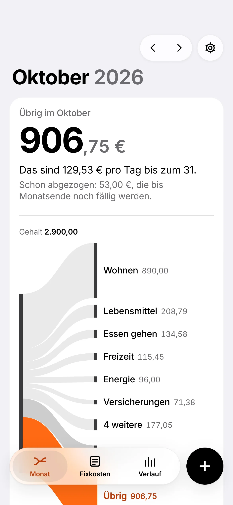
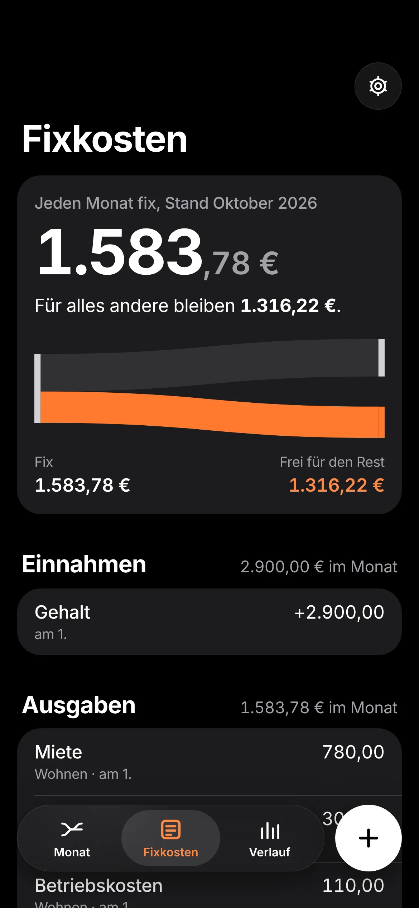
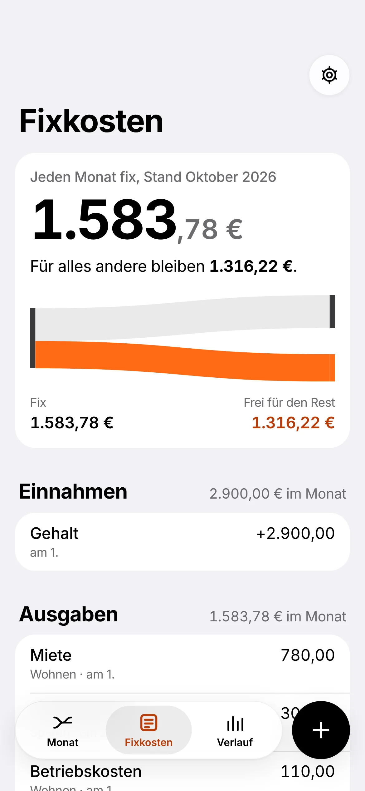
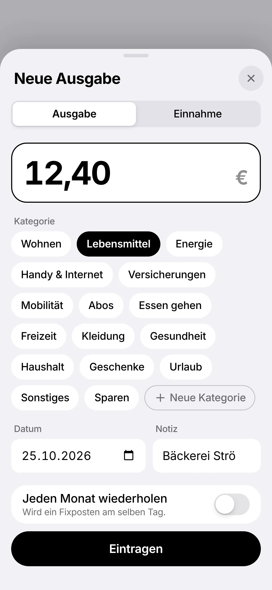
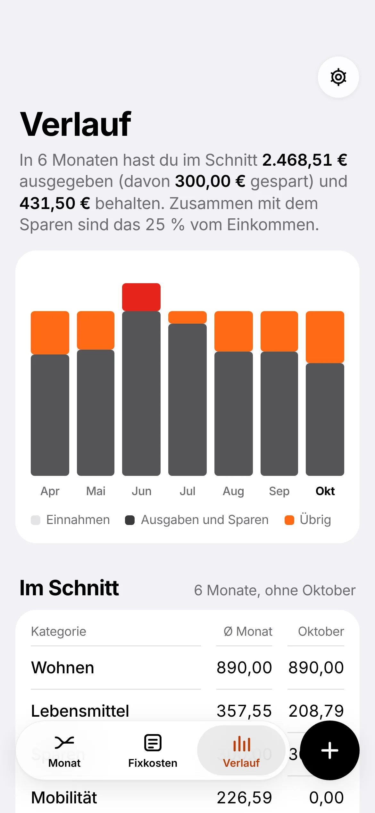
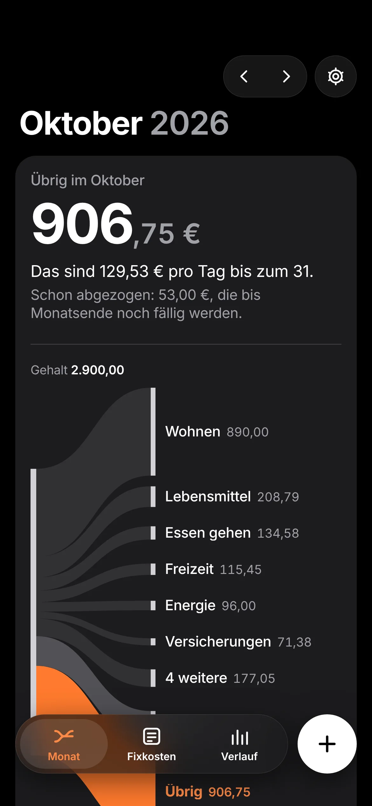

Sieh, wohin dein Geld fließt.
Einnahmen, Fixkosten und Ausgaben als ein Fluss. Du siehst jeden Monat, was übrig bleibt. Kostenlos, ohne Konto, nur in deinem Browser.



Probier es mit deinen Zahlen.
Trag dein Netto ein und schieb die großen Posten. Der Fluss ist derselbe wie in der App: Jeder Arm ist so breit wie das Geld, das dorthin geht. Orange ist, was dir bleibt.
Nichts davon wird gespeichert oder gesendet.
Der Monat in drei Handgriffen.

Fixkosten einmal eintragen.
Gehalt, Miete, Versicherungen, Abos. Monatlich, vierteljährlich oder jährlich: Sie fließen von selbst in jeden Monat. Steigt die Miete, gilt der neue Betrag ab dem Monat, den du wählst, und die Vergangenheit bleibt, wie sie war.

Ausgaben in Sekunden.
Betrag tippen, Kategorie wählen, fertig. Der Fluss verzweigt sich neu und du siehst sofort, was pro Tag noch frei ist. Falsch eingetragen? Zur Seite wischen oder rückgängig machen.

Der Verlauf sagt dir die Wahrheit.
Monat für Monat, was rein kam, was raus ging und was blieb. Dazu dein Schnitt pro Kategorie, und ein Satz, wenn etwas aus der Reihe fällt: „Essen gehen liegt schon 24 % über deinem Schnitt.“
Übrig im Oktober
Deine Zahlen gehören dir.
- Kein Konto, kein Server. Alles liegt nur in deinem Browser, auf deinem Gerät.
- Kein Tracking, keine Werbung. Die Seite lädt nichts von anderen Diensten.
- Sicherung als Datei. Ein Tipp, und du hast alles als JSON, oder als Tabelle für Excel.
- Offen. Der ganze Quellcode liegt auf GitHub, unter der MIT-Lizenz.
Weil nichts auf einem Server liegt, gleicht Geldfluss nicht zwischen Geräten ab. Mit der Sicherungsdatei nimmst du deine Daten auf ein anderes Gerät mit.

Auf dein Handy, ohne App Store.
Geldfluss ist eine Web-App. Einmal zum Home-Bildschirm hinzufügen, dann öffnet sie sich wie jede andere App, auch offline.
-
iPhone und iPad
In Safari öffnen, auf Teilen tippen, dann „Zum Home-Bildschirm“.
-
Android
In Chrome öffnen, im Menü „App installieren“ wählen.
-
Computer
In Chrome oder Edge öffnen und in der Adressleiste auf „Installieren“ klicken. Oder einfach im Browser nutzen.